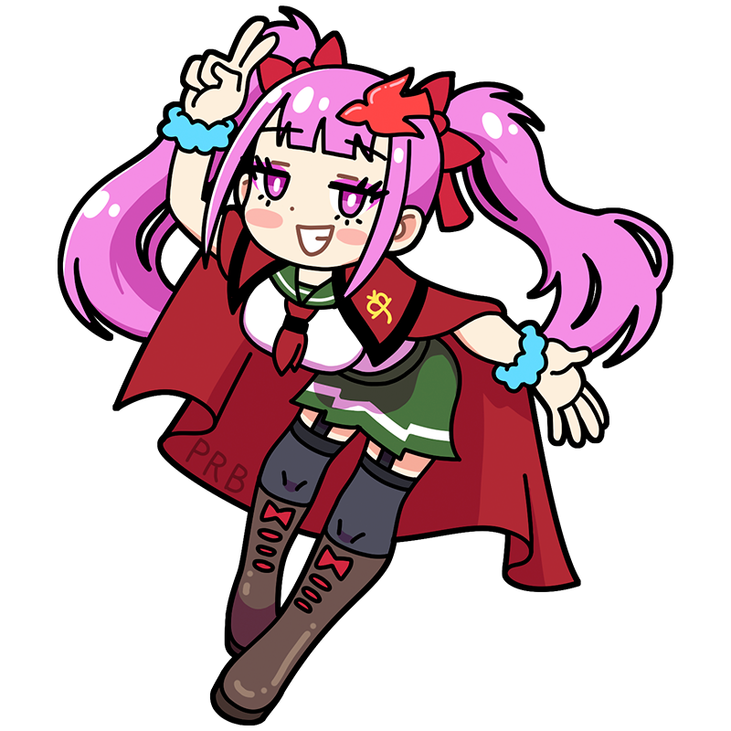

Like, seriously—
aren't I absolutely slaying today?
Rossetti
Think anyone can beat us when it comes to style and vibes?
The ultimate muse kicking classical art to the curb.
One of the founding members of the Pre-Raphaelite Brotherhood and a schoolmate of Millais. With a personality that throws herself wholeheartedly into both trends and self-expression, she's impossible to ignore. Her eccentric fashion and bold behavior come from a determination to stay true to herself, though she does occasionally get carried away.
Style
Hometown
England
Classics
- "Beata Beatrix"
- "Proserpina"
- "The Annunciation" etc.
This is the Rossetti piece!
Beata Beatrix
The title means Blessed Beatrix and depicts Beatrice, the ideal woman who appears in Dante's epic poem The Divine Comedy. Originally intended simply as a portrayal of Beatrice, the painting took on new meaning after the death of Rossetti's wife and model, Elizabeth Siddal. Today, it is widely regarded as a memorial work dedicated to her memory.
Year
1864-1870
Medium
Oil on canvas
Dimension
86.4 cm x 66 cm
Collection
Tate Britain
（United Kingdom)
Who is Rossetti?
Dante Gabriel Rossetti
A founding member of the Pre-Raphaelite Brotherhood alongside Millais and Hunt. Influenced in part by his father, who was a poet, Rossetti frequently drew inspiration from literature and mythology. Compared with other Pre-Raphaelites, who emphasized meticulous realism, he became known for a more dreamlike and highly decorative style. His personal life was full of dramatic episodes, including the death of his wife Elizabeth Siddal and his close relationship with Jane Morris, the wife of William Morris. In many ways, Rossetti embodied the youthful energy and rebellious spirit of the Pre-Raphaelite movement.
Full Name
Gabriel Charles Dante Rossetti
Born
May 12, 1828
Died
April 10, 1882(aged 53)